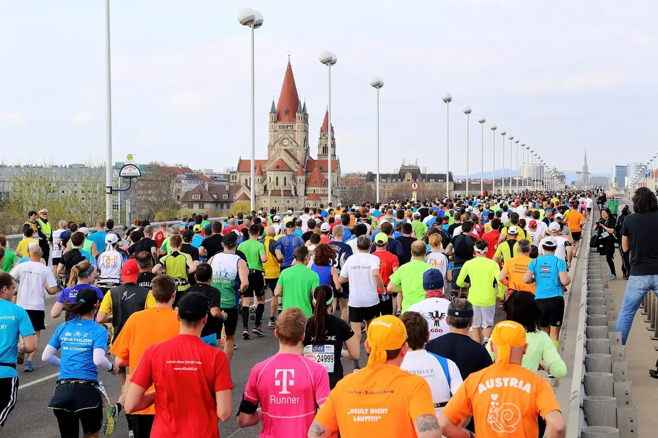

Dein erster Halbmarathon: Was die Forschung über Training, Tempo und Renntag sagt
Vienna City Marathon 2015, Reichsbrücke. Foto: C.Stadler/Bwag, Wikimedia Commons, CC BY-SA 4.0
21,1 Kilometer – das klingt nach viel. Aber wenn du heute schon regelmäßig läufst, ist der erste Halbmarathon ein Ziel, das du in ein paar Monaten erreichen kannst. Hier steht, wie du dich vorbereitest, wie du den Renntag genießt und wie du dich danach erholst.
Bist du bereit?
Ein Halbmarathon ist genau die Hälfte eines Marathons: 21,0975 Kilometer[1]. Gute Voraussetzungen hast du, wenn du seit einigen Monaten regelmäßig läufst und 5 bis 10 Kilometer am Stück schaffst. Dann reichen meist rund drei Monate Vorbereitung.
Wenn du länger keinen Sport gemacht hast oder gesundheitliche Fragen hast, sprich vorher kurz mit deiner Ärztin oder deinem Arzt – dann kannst du mit gutem Gefühl loslegen.
Der lange Lauf ist dein wichtigstes Training
Das Herzstück jeder Halbmarathon-Vorbereitung ist der lange Lauf am Wochenende. Woche für Woche wird er ein Stück länger – bis du einige Wochen vor dem Rennen 16 bis 18 Kilometer locker laufen kannst. Die ganze Distanz musst du vorher nicht laufen; den Rest trägt dich am Renntag die Stimmung.
Wichtig ist, ihn geduldig zu verlängern. Eine große Studie mit über 5.000 Läuferinnen und Läufern zeigt: Probleme gibt es vor allem dann, wenn ein einzelner Lauf plötzlich deutlich länger ist als alles, was du im letzten Monat gelaufen bist[2]. Die oft zitierte 10-Prozent-Regel für den Wochenumfang ist übrigens nicht so streng belegt, wie viele denken[3] – wichtiger ist, dass du keine großen Sprünge machst.
Faustregel: Verlängere deinen langen Lauf um ein, zwei Kilometer pro Woche und gönn dir alle drei, vier Wochen eine etwas leichtere Woche. Und wenn mal etwas zwickt: lieber ein Ruhetag mehr. So bleibst du dran – und darauf kommt es an.
Meistens locker, manchmal zügig
Klingt komisch, funktioniert aber: Die meisten Kilometer solltest du langsam laufen – so langsam, dass du dich dabei unterhalten kannst. Selbst Spitzensportlerinnen und -sportler im Ausdauerbereich trainieren rund 80 Prozent der Zeit locker und nur etwa 20 Prozent intensiv[4].
Für dich heißt das: Eine Woche mit drei bis vier Läufen könnte so aussehen:
- zwei lockere Läufe von 30 bis 50 Minuten,
- ein zügigerer Lauf, zum Beispiel einige Kilometer in deinem geplanten Renntempo oder kurze, schnelle Abschnitte,
- der lange, ruhige Lauf am Wochenende.
Wer mag, ergänzt das mit Radfahren, Schwimmen oder etwas Kräftigung – das stärkt den Körper, ohne die Beine zusätzlich zu belasten.
Die letzten zwei Wochen: weniger ist mehr
In den zwei Wochen vor dem Rennen fährst du den Umfang deutlich zurück, etwa um die Hälfte. Lauf aber weiter an deinen gewohnten Tagen und streu ein paar kurze Abschnitte im Renntempo ein. Studien zeigen, dass genau diese Kombination am besten wirkt[5]. Was in dieser Zeit im Körper passiert, erklärt unser Beitrag „Tapering: Warum weniger Training vor dem Rennen dich schneller macht“.
Der Renntag
Ruhig starten
Der häufigste Fehler beim ersten Halbmarathon: zu schnell loslaufen, weil die Stimmung am Start mitreißt. Ein gleichmäßiges Tempo bringt dich bei langen Strecken meist am besten ins Ziel[6]. Lauf die ersten Kilometer bewusst etwas langsamer, als du dich fühlst – wenn du am Ende noch Reserven hast, umso schöner.
Essen und Trinken
Wenn du länger als etwa eine Stunde unterwegs bist, helfen dir unterwegs ein paar Kohlenhydrate, zum Beispiel ein Gel oder ein Becher Sportgetränk an der Verpflegungsstelle. Als Richtwert für längere Belastungen gelten 30 bis 60 Gramm pro Stunde[7]. Probier im Training aus, was dein Magen verträgt – am Renntag gilt: nichts Neues.
Beim Trinken ist es ganz einfach: Trink, wenn du Durst hast. Mehr hilft nicht mehr[8].
Genießen
Und vergiss nicht, dich umzuschauen: die Zuschauer, die Musik, die anderen Läuferinnen und Läufer neben dir. Dein erster Halbmarathon passiert nur einmal.
Nach dem Ziel
Gönn dir zwei bis drei ruhige Tage. Spazierengehen oder lockeres Radfahren tun gut, zügiges Laufen hebst du dir für später auf – eine Studie zeigt, dass sich die Muskulatur mit Ruhe in etwa drei Tagen erholt[9]. Danach kannst du langsam wieder einsteigen. Und vielleicht schon das nächste Ziel suchen.
Dein Halbmarathon auf endurance-events.de
- Öffne die Liste aller Halbmarathons in Deutschland, Österreich, der Schweiz und Südtirol.
- Stell unter „Ort & Umkreis“ deinen Wohnort ein und unter „Datum“ einen Termin, der dir genug Vorbereitungszeit lässt.
- Unter „Kategorie“ wählst du Straße oder Trail. Für den ersten Halbmarathon ist ein flacher Straßenlauf meist die entspanntere Wahl.
Fazit
Für deinen ersten Halbmarathon brauchst du keinen perfekten Plan, sondern Geduld: den langen Lauf langsam verlängern, die meisten Kilometer locker laufen, vor dem Rennen ausruhen, ruhig starten und nach Durst trinken. Den Rest erledigen die Stimmung an der Strecke und das Gefühl im Ziel.
Finde deinen ersten Halbmarathon
Hunderte Halbmarathons auf Straße und Trail – mit Datum, Ort und Link zum Veranstalter.
Quellen
- World Athletics: Half Marathon. worldathletics.org
- Frandsen J. S. B. et al.: How much running is too much? Identifying high-risk running sessions in a 5200-person cohort study. Br J Sports Med 2025;59:1203–1210. PMC12421110
- Buist I. et al.: No effect of a graded training program on the number of running-related injuries in novice runners: a randomized controlled trial. Am J Sports Med 2008;36:33–39. doi:10.1177/0363546507307505
- Seiler S.: What is best practice for training intensity and duration distribution in endurance athletes? Int J Sports Physiol Perform 2010;5:276–291. doi:10.1123/ijspp.5.3.276
- Bosquet L. et al.: Effects of tapering on performance: a meta-analysis. Med Sci Sports Exerc 2007;39:1358–1365. doi:10.1249/mss.0b013e31806010e0
- Abbiss C. R., Laursen P. B.: Describing and understanding pacing strategies during athletic competition. Sports Med 2008;38:239–252. doi:10.2165/00007256-200838030-00004
- Burke L. M., Hawley J. A., Wong S. H., Jeukendrup A. E.: Carbohydrates for training and competition. J Sports Sci 2011;29 Suppl 1:S17–27. doi:10.1080/02640414.2011.585473
- Hew-Butler T. et al.: Exercise-associated hyponatremia: 2017 update. Front Med 2017;4:21. PMC5334560
- Zhou J. et al.: Quantitative MRI evaluation of the effects of rest and different intensities of running on the recovery of thigh muscle microdamage after a half marathon. BMC Sports Sci Med Rehabil 2026. PMC13081450
Alle Quellen abgerufen am 4. November 2026. Trainingstipps ohne Quellenangabe sind Erfahrungswerte.

.JPG){kind=link}